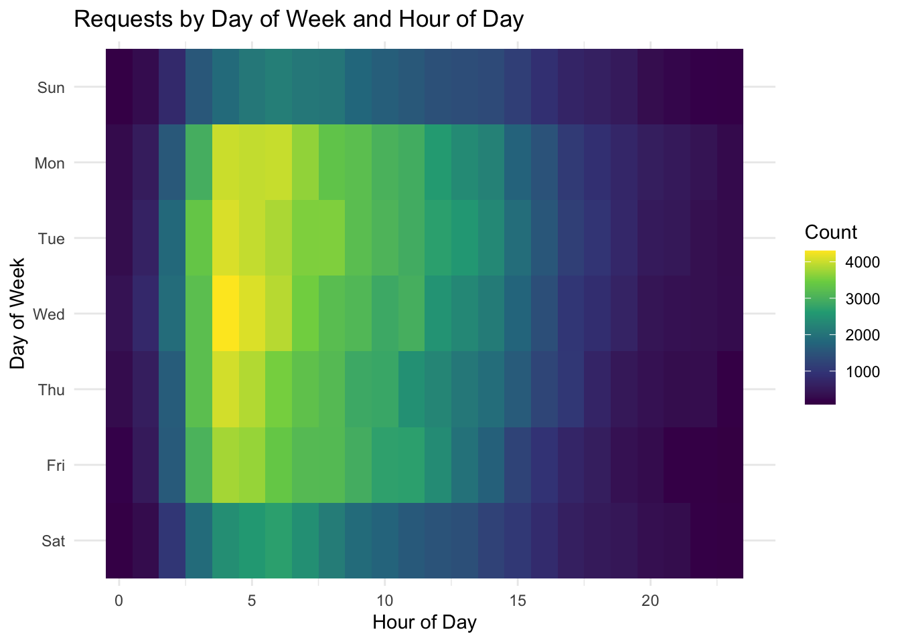

From our missing value analysis, since submitted_photo and closedphoto column do not contain many non-null values, we drop these columns entirely.
A few other other columns (closure_reason, location_zipcode, sla_target_dt) have around 20% null values, we choose to drop these too as they will not interfere with our analysis.
What remains are columns with a very low percentage of missing values (~1%), and a comprehensive dataset.
3.2 When Do Residents Report Issues?
We begin our analysis by investigating any seasonal trends in the number of 311 requests made.
Since this dataset was pulled in November, we will assume the data for that month is incomplete. Nonetheless, the data shows a steady increase in the number of requests throughout 2024, peaking in August before declining. Perhaps this trend can be attributed to the warm weather. Warmer months, especially in summer, often bring increased outdoor activities such as public events, festivals, and tourism. These activities lead to a rise in noise complaints, trash collection requests, and reports of public infrastructure issues, explaining the upward trend in 311 requests as the weather gets warmer.
While exploring seasonal trends provide us with insights into how external factors like weather and activities influence the volume of requests, we can also analyze patterns by day of the week and hour of the day to get a closer look at when residents are most likely to engage with the 311 system. These finer temporal trends can help us understand the daily rhythms of service requests and how they align with the city’s operational dynamics.
Code
df$day_of_week <-wday(df$open_dt, label =TRUE, week_start =1) # Monday = 1df$hour <-hour(df$open_dt)df$day_of_week <-factor(df$day_of_week, levels =c("Sun", "Mon", "Tue", "Wed", "Thu", "Fri", "Sat"))df$day_of_week <-fct_rev(df$day_of_week)heat_data <- df |>count(day_of_week, hour)ggplot(heat_data, aes(x = hour, y = day_of_week, fill = n)) +geom_tile() +scale_fill_viridis_c() +labs(title ="Requests by Day of Week and Hour of Day",x ="Hour of Day", y ="Day of Week", fill ="Count") +theme_minimal()

The requests appear to be more concentrated during early mornings of weekdays, suggesting that most issues reported are likely related to workweek activities, such as commuting, public services, or business-related issues. The lower activity on weekends might reflect reduced reporting due to fewer operational hours of city departments or residents being less engaged with city services during days off. The gradual decline in requests after the morning hours suggests that residents are less likely to report issues as the day progresses, possibly due to being occupied with work or other activities.
Understanding when residents engage with the 311 system provides valuable insight into the timing of service needs. However, to gain a deeper understanding of the issues themselves, we can analyze the reasons behind these requests.
3.3 What Are Boston Residents Reporting?
Code
df |>group_by(reason) |>summarize(n =n()) |>mutate(reason =fct_reorder(reason, n)) |>ggplot(aes(x = reason, y = n)) +geom_col(fill ="blue") +coord_flip() +labs(title ="Reasons for 311 Service Requests",x ="Reason",y ="Count of Requests" ) +theme_minimal()+theme(axis.text.y =element_text(size =8) )
To gain a high-level overview, we plotted the counts for all 45 distinct reasons for requests in our dataset. The most common reason is “Enforcement & Abandoned Vehicles,” accounting for over 60,000 requests (22.5% of the total), followed by “Street Cleaning” and “Code Enforcement.”
This naturally leads to the question: what do these reasons actually represent? Specifically, can we uncover more details about what these requests entail? By consulting the attached data dictionary, we learn that the “reason” and “type” columns are part of a hierarchical case classification system, where “reason” represents a broader category, and “type” provides a more detailed breakdown (REASON > TYPE).
This allows us to create the following alluvial diagram, showing how a “reason” flows to different “types”.
Note that since the “type” column contains too many categories and makes the alluvial chart unreadable, we aggregated less frequent categories into an “Other” category. Specifically, this alluvial diagram only shows the top 10 most frequent types, drawn from the subsetted dataframe of top 5 reasons.
The main thing to notice is that the vast majority of “Enforcement & Abandoned Vehicles” requests are for Parking Enforcement (57,299 requests), making this the most common source for 311 requests in our dataset. Boston, similar to New York City, is a dense urban environment, where limited parking availability and strict enforcement policies often lead to conflicts and violations.
“Code Enforcement” is another significant category, with the most frequent type being “Improper Storage of Trash (Barrels)” (18,782 requests), followed by “Poor Conditions of Property” (8,116 requests). The high volume of trash-related requests may stem from challenges in managing waste in densely populated areas or neighborhoods with limited access to proper waste disposal resources. We will investigate geographic trends soon.
“Street Cleaning” requests are predominantly related to “Requests for Street Cleaning” (20,681 requests), with “CE Collection” (16,506 requests) also being a major contributor. Smaller, specialized issues like “Pick up Dead Animal” (7,854 requests) are also noteworthy.
“Highway Maintenance” primarily involves “Request for Pothole Repair” (10,158 requests), indicating the persistent issue of potholes in the city’s infrastructure. The “Other” type here accounts for 11,083 requests, suggesting a wide range of miscellaneous highway-related issues.
“Sanitation” requests are dominated by “Schedule a Bulk Item Pickup” (11,162 requests) and its closely related subtype “Schedule a Bulk Item Pickup SS” (6,918 requests). These reflect residents’ need for efficient disposal of larger waste items.
Now that we have an idea of both the temporal trends of requests and the request reasons, let’s see the temporal trends of request reasons!
Code
selected_reasons <-c(# "Enforcement & Abandoned Vehicles","Signs & Signals","Highway Maintenance","Sanitation","Street Cleaning","Graffiti","Park Maintenance & Safety")# only the selected reasonsdf_filtered <- df |>filter(reason %in% selected_reasons)df_monthly <- df_filtered |>mutate(month =floor_date(open_dt, "month")) |>group_by(reason, month) |>summarize(request_count =n(), .groups ="drop")df_monthly$month =as.Date(df_monthly$month, format ="%Y-%m-%d") # LINE CHARTggplot(df_monthly, aes(x = month, y = request_count, color = reason)) +geom_line(size =1) +scale_x_date(date_breaks ="1 month", date_labels ="%b %Y") +labs(title ="Monthly Request Counts by Reason",x ="Month",y ="Number of Requests",color ="Reason" ) +theme_minimal() +theme(axis.text.x =element_text(angle =45, hjust =1),legend.position="bottom",legend.box ="horizontal",legend.title =element_blank(),)+guides(color =guide_legend(nrow =2, # Force legend into 2 rsbyrow =TRUE,# title.position = "top", title.hjust =0.5 ) )
We handpicked six reasons of interest and plotted them. Notably, Street Cleaning requests demonstrate a consistent upward trajectory throughout the year, culminating in a significant peak in August. Similar to before, this surge likely correlates with increased outdoor activities and public presence during the summer months, which naturally result in more debris and litter accumulation.
Similarly, both Sanitation and Park Maintenance & Safety categories exhibit pronounced peaks during the summer. The warmer weather encourages greater utilization of parks and recreational areas, leading to increased waste generation and a corresponding rise in maintenance and safety concerns.
Highway Maintenance requests, on the other hand, peak in the spring. This trend is likely a result of post-winter recovery efforts, where roads suffer damage from ice, snow removal activities, and the freeze-thaw cycles common in colder climates. These conditions lead to the formation of potholes, cracks, and other roadway imperfections that require timely repairs to ensure safe and efficient transportation.
In contrast, the Graffiti and Signs & Signals categories maintain relatively stable request volumes throughout the year. Switching gears a bit, let’s explore how long each request takes to be resolved.
3.4 How Long Does It Take to Resolve Issues?
Code
df <- df |>mutate(duration_hours =as.numeric(difftime(closed_dt, open_dt, units ="hours")),log_duration =log1p(duration_hours)) ggplot(df, aes(x = log_duration)) +geom_histogram(binwidth =0.2, fill ="lightblue", color ="black") +labs(title ="Histogram of Log-Transformed Case Durations",x ="Request Duration (Hours)",y ="Frequency" ) +scale_x_continuous(breaks =log1p(c(0.5, 2, 5, 10, 15, 50, 100)),labels =c(0.5, 2, 5, 10, 15, 50, 100) ) +theme_minimal()
To analyze the duration of 311 service requests, we engineered a new feature by calculating the difference between the closed_dt and open_dt timestamps. This new column represents the time each request took from its opening to its official closure. Plotting a histogram of these raw duration values revealed a highly right-skewed distribution. This skewness indicates that while most requests were closed relatively quickly, a significant number took much longer to resolve, making for an unclear visualization.
To address the skewness and normalize the distribution, we applied a log-transform to the column. It’s important to note that although the data has been log-transformed to achieve a more symmetric distribution, the x-axis of the histogram is still labeled in the original time units (hours). This means that while the shape of the distribution reflects the log-transformed values, the axis maintains interpretability in terms of actual request durations.
The transformed distribution exhibits a tri-modal pattern, with distinct peaks at approximately 0.5 hours, 15 hours, and 100 hours. Let’s investigate further!
Code
df <- df |>mutate(duration_category =case_when( duration_hours <2~"< 2 Hours", duration_hours >=2& duration_hours <=24~"2-24 Hours", duration_hours >24~"> 24 Hours" )) |>mutate(duration_category =factor(duration_category, levels =c("< 2 Hours", "2-24 Hours", "> 24 Hours")))# 2. Identify the top 5 reasons within each duration categorytop_reasons <- df |>group_by(duration_category, reason) |># Group by both category and reasonsummarise(count =n(), .groups ='drop') |># Count occurrencesarrange(duration_category, desc(count)) |># Arrange for descending countsgroup_by(duration_category) |>slice_max(order_by = count, n =5) |># Select top 5 per categoryungroup()# Optional: Ensure that 'reason' is a factor with levels ordered by count within each categorytop_reasons <- top_reasons |>group_by(duration_category) |>mutate(reason =fct_reorder(reason, count)) |>ungroup()top_reasons <- top_reasons |>filter(!is.na(duration_category))# 3. Create the faceted bar chartggplot(top_reasons, aes(x =fct_reorder(reason, count), y = count, fill = reason)) +geom_bar(stat ="identity", show.legend =FALSE) +# Create bars without legendfacet_wrap(~ duration_category, scales ="free_y", ncol=1) +# Facet by duration category with free y-scalescoord_flip() +# Flip coordinates for better readabilitylabs(title ="Top 5 Reasons for 311 Requests by Duration Category",x ="Reason",y ="Number of Requests" ) +theme_minimal() +# Use a minimal themetheme(strip.text =element_text(size =12, face ="bold"), # Style facet labelsaxis.text =element_text(size =10),axis.title =element_text(size =12) )
After categorizing 311 service request durations into three groups—less than 2 hours, 2 to 24 hours, and over 24 hours—and identifying the top five reasons in each category, clear patterns emerge regarding resolution times.
In the less than 2 hours category, Street Cleaning, Code Enforcement, and Enforcement & Abandoned Vehicles are the most frequent requests, demonstrating the city’s efficiency in addressing these urgent and high-volume issues promptly.
The 2 to 24 hours category continues to feature Street Cleaning, Code Enforcement, and Enforcement & Abandoned Vehicles, albeit with slightly lower counts. Additionally, Sanitation and Highway Maintenance appear in this category, indicating that infrastructure-related requests require more coordination across different sectors and resources, leading to longer resolution times.
In the over 24 hours category, Enforcement & Abandoned Vehicles remains the most prevalent reason, underscoring that some enforcement actions are more complex and time-consuming, possibly involving legal processes or logistical challenges.
Let’s switch gears a bit, and explore where, on a map, these requests are actually made to.
3.5 Where Are Requests Coming From?
Code
requests_by_nh <- df |>group_by(neighborhood) |>summarize(request_count =n())requests_by_nh <- requests_by_nh |>mutate(neighborhood =case_when( neighborhood =="Fenway / Kenmore / Audubon Circle / Longwood"~"Fenway", neighborhood =="South Boston / South Boston Waterfront"~"South Boston",TRUE~ neighborhood # Keep other values unchanged ))boston_geo <-st_read("~/Desktop/EDAV/Boston_Neighborhoods.geojson", quiet =TRUE)# Make all geometries validboston_geo <-st_make_valid(boston_geo)boston_geo <- boston_geo |>rename(neighborhood = Name)boston_geo_joined <- boston_geo |>left_join(requests_by_nh, by ="neighborhood")# Centroid points from the sf objectcentroids <-st_centroid(boston_geo_joined)# Extract coordinatescentroids_coords <-st_coordinates(centroids)centroids_df <-cbind(boston_geo_joined, centroids_coords)# centroids_df now contains all original data plus X and Y columns for the centroid coordinatesggplot() +geom_sf(data = boston_geo_joined, aes(fill = request_count),color ="white", size =0.2) +# Use geom_text_repel with coordinates extracted from centroidsgeom_text_repel(data = centroids_df, aes(x = X, y = Y, label = neighborhood),size =3, color ="black", box.padding =0.3, point.padding =0.3) +scale_fill_viridis_c(option ="plasma", na.value ="gray90") +theme_minimal() +labs(title ="311 Requests by Neighborhood in Boston",fill ="Number of Requests")
Note: This geojson file of Boston is from a third party source (https://github.com/blackmad/neighborhoods/blob/master/boston.geojson), which is why some neighborhoods are not colored.
Dorchester clearly stands out with the highest volume of 311 requests, surpassing 36,000 and significantly outpacing all other neighborhoods. Roxbury, South Boston, and Jamaica Plain follow with substantial request counts, each registering over 20,000. Meanwhile, more central neighborhoods such as the South End, East Boston, and Jamaica Plain also record considerable activity, reflecting ongoing demands for city services and infrastructure support. Although areas like Back Bay and Downtown/Financial District report fewer requests relative to the top performers, their numbers still exceed 10,000, indicating that no part of the city is without frequent resident needs.
This raises an important question: does the volume of requests in a neighborhood correlate with how quickly they are resolved? Exploring the relationship between neighborhood request density and resolution times can provide valuable insights into the city’s resource allocation and service efficiency.
Code
df |>group_by(neighborhood) |>summarize(avg_duration =mean(duration_hours, na.rm =TRUE), request_count =n() ) |>ggplot(aes(x = request_count, y = avg_duration, label = neighborhood)) +geom_point(color ="blue", size =3) +geom_text_repel(size =3, box.padding =0.35, # Space around the text labelpoint.padding =0.5, # Space between the point and the labelsegment.color ='grey50', # Color of the line connecting label to pointmax.overlaps =Inf# Allow all labels to be displayed without removing any ) +labs(title ="Request Volume vs. Resolution Time by Neighborhood",x ="Number of Requests",y ="Average Resolution Time (Hours)" ) +theme_minimal()
Overall, the data indicates that the average resolution time remains relatively consistent irrespective of the number of requests a neighborhood receives. Most neighborhoods exhibit average resolution times within the 100 to 200-hour range, suggesting a standardized efficiency in handling service requests city-wide.
However, the graph identifies some outliers that deviate from this general trend. Notably, West Roxbury and Roslindale, neighboring areas located in the southwestern corner of Boston, exhibit higher-than-average resolution times. This clustering of high-resolution times in adjacent areas may be attributed to several factors, such as limited access to city resources, higher volumes of complex requests, or logistical challenges inherent to their geographic locations.
Conversely, Dorchester stands out by receiving the highest number of requests while maintaining an average resolution time within the expected range. This balance between high request volume and consistent resolution times highlights effective resource management and operational efficiency within the neighborhood. Dorchester’s ability to handle a large influx of requests without compromising on resolution speed reflects positively on the city’s capacity to support densely populated or highly active areas without overburdening service departments
Lastly, neighborhoods such as the South End and South Boston/South Boston Waterfront, located adjacent to the popular Seaport District, as well as Back Bay, located near bustling shopping areas, demonstrate remarkably low average resolution times. These neighborhoods are located in the heart of Boston and are surrounded by dense urban environments, bustling streets, and commercial establishments that may be better equipped to handle service demands efficiently. For example, the central location probably facilitates quicker access to city services and resources, while the concentration of businesses and amenities may streamline the process of addressing and resolving requests.
Code
selected_neighborhoods <-c("Roslindale", "West Roxbury", "Back Bay", "South Boston / South Boston Waterfront", "South End", "Dorchester")df_filtered <- df |>filter(neighborhood %in% selected_neighborhoods) |>group_by(neighborhood) |>count(reason, name ="count") |>slice_max(order_by = count, n =3, with_ties =FALSE) |>ungroup()ggplot(df_filtered, aes(x =fct_reorder(neighborhood, count, .desc =TRUE), y = count, fill = reason)) +geom_bar(stat ="identity", position =position_dodge(width =0.9), width =0.9) +# Grouped bar settingslabs(title ="Top 3 Reasons for 311 Requests by Neighborhood",x ="Neighborhood",y ="Count of Requests",fill ="Reason" ) +theme_minimal() +theme(axis.text.x =element_text(size =7, angle =45, hjust =1), # Rotate x-axis labels for clarityplot.margin =margin(10, 1, 10, 10), # Optional: Adjust marginspanel.grid.major.x =element_blank() # Optional: Remove grid lines for better readability )
Breaking down the six neighborhoods from the previous graph by reasons highlights both similarities and differences in 311 request patterns.
South Boston / South Boston Waterfront stands out with an overwhelming number of requests for Enforcement & Abandoned Vehicles, likely driven by the notorious parking challenges in the Seaport area, where residents and visitors frequently report parking violations.
In contrast, bustling downtown neighborhoods like the South End, Seaport, and Back Bay share the same top three reasons for 311 requests: Code Enforcement, Enforcement & Abandoned Vehicles, and Street Cleaning. These categories reflect the unique demands of urban areas with dense populations and high activity levels.
Meanwhile, less urban neighborhoods such as Roslindale, West Roxbury, and Dorchester show a different pattern. While Enforcement & Abandoned Vehicles remains a top concern, other requests like Sanitation and Tree Maintenance also feature prominently, reflecting the more residential and suburban characteristics of these areas.